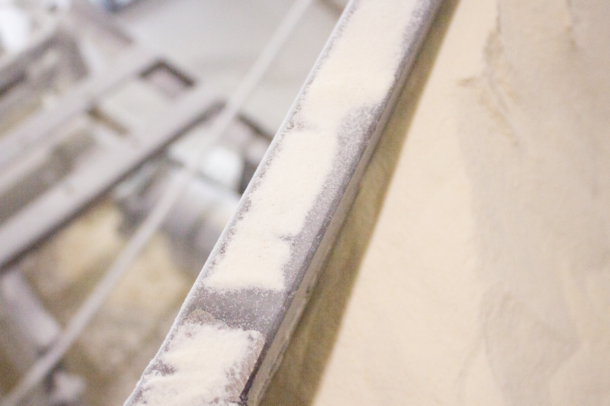
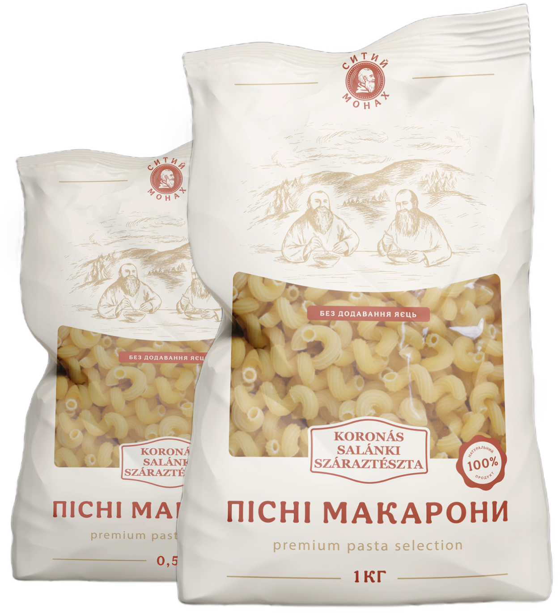

Виробництво макаронних виробів на нашій фабриці — це високотехнологічний і багатоступеневий процес, який поєднує сучасні технології та традиції виробництва пасти. Ми приділяємо особливу увагу якості сировини, кожному етапу виготовлення та дотриманню суворих стандартів для забезпечення преміум-класу нашої продукції.
Підбір високоякісної сировини
Ми використовуємо лише крупку макаронну вищого ґатунку (durum) з твердих сортів пшениці від перевірених постачальників як з України, так і з-за кордону. Перед початком виробництва кожна партія сировини проходить суворий аналіз, що гарантує відповідність найвищим стандартам якості. Це дозволяє нам постійно вдосконалювати рецептуру макаронних виробів, щоб забезпечити ідеальні смакові та споживчі властивості.

Заміс і контроль якості
Процес замісу тіста для макаронних виробів – ключовий етап виробництва, який здійснюється під ретельним наглядом операторів. Кожний заміс тіста проходить контроль спеціалістів, що забезпечує стабільну якість кожної партії. Ми не застосовуємо масові методи виробництва за системою «швидких макаронів», гарантуючи увагу до деталей на кожному етапі.
Форми пасти
Формування різноманітних видів макаронів відбувається на сучасному італійському обладнанні з використанням високоточних матриць. Це дозволяє нам створювати макаронні вироби різних форм і розмірів, що зберігають свою структуру та текстуру під час приготування.
Сушка
Сушка макаронних виробів – це технологічно складний процес, що забезпечує тривалу якість готової продукції. Ми розробили власні програми для сушіння, а також використовуємо спеціалізовані комп'ютерні системи, створені інженерами нашого підприємства. Процес сушіння триває до 20 годин і проходить під суворим контролем, що гарантує ідеальний баланс вологості та текстури кожної партії макаронів.

Спробуйте нашу нову лінійку пасти без яєць – «Ситий монах»
Ідеальне рішення для тих, хто дотримується посту або веганського способу життя. Наші макарони не містять яєць, але зберігають відмінний смак і текстуру, які порадують вас та вашу родину.
Спробуйте нашу нову лінійку пасти без яєць – «Ситий монах»
Ідеальне рішення для тих, хто дотримується посту або веганського способу життя. Наші макарони не містять яєць, але зберігають відмінний смак і текстуру, які порадують вас та вашу родину.
Спробуйте нашу нову лінійку пасти без яєць – «Ситий монах»
Ідеальне рішення для тих, хто дотримується посту або веганського способу життя. Наші макарони не містять яєць, але зберігають відмінний смак і текстуру, які порадують вас та вашу родину.
Залиште заявку
і ми обов’язково зв'яжемося з вами найближчим часом